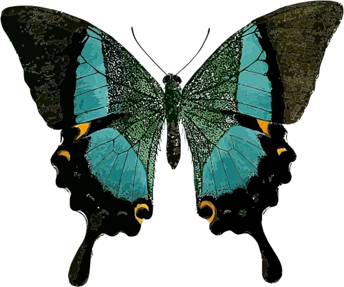

<p class="butterfly-1">
  
  
</p>

<style>
*{
  -webkit-box-sizing  : border-box;
     -moz-box-sizing  : border-box;
       -o-box-sizing  : border-box;
      -ms-box-sizing  : border-box;
          box-sizing  : border-box;
}
.butterfly-1 {
  --deg : 30deg;
  --speed : 1.2s;

  display: flex;
  width: 300px;
  overflow: hidden;
  perspective: 800px; /* 立体感 */
  filter:drop-shadow(10px 10px 5px rgba(0,0,0,0.5));
}
.butterfly-1 img{
  width: 100%;
  height: auto;
  object-fit: cover;
}
.butterfly-1 img:nth-of-type(1) {
  clip-path: inset(0 50% 0 0);
}
.butterfly-1 img:nth-of-type(2) {
  clip-path: inset(0 0 0 50%);
  margin-left: calc(-100% + 10px);
}
</style>